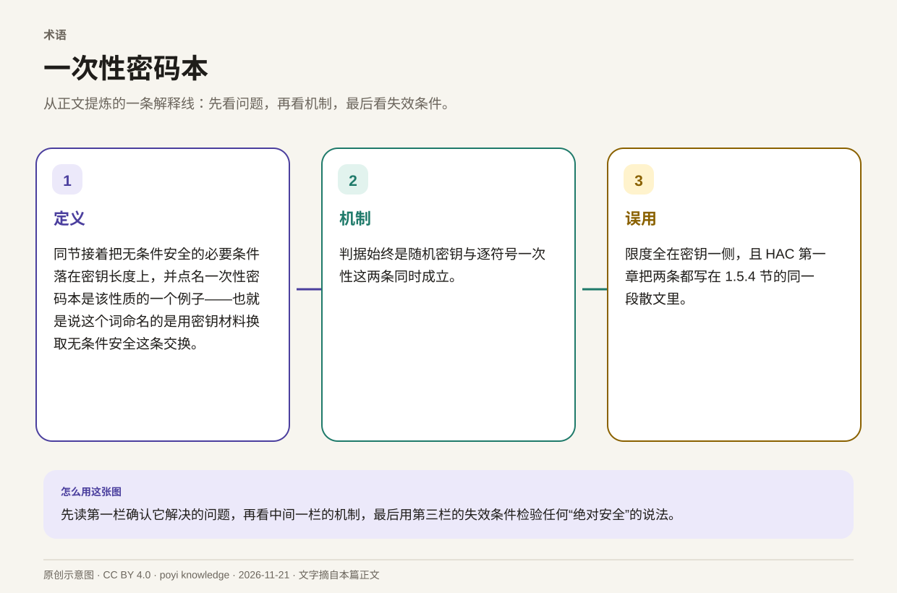

原理与机制
术语：一次性密码本（One-Time Pad (OTP)）。定义句在 RFC 4949 的一次性密码该条目第二义里：「An encryption algorithm in which the key is a random sequence of symbols and each symbol is used for encryption only one time -- i.e., used to encrypt only one plaintext symbol and thus produce only one ciphertext symbol -- and a copy of the key is used similarly for decryption.」条目把第一义留给物理形态——一本供一次使用的纸质密码本——一个词面同时挂住纸面制品与形式化定义；判据始终是随机密钥与逐符号一次性这两条同时成立。

为什么重要
为什么一次性这个条件值得单独命名，HAC 第一章在评估安全性的模型一节给出性质侧的定义：「Unconditional security for encryption systems is called perfect secrecy.For perfect secrecy, the uncertainty in the plaintext, after observing the ciphertext, must be equal to the a priori uncertainty about the plaintext」。同节接着把无条件安全的必要条件落在密钥长度上，并点名一次性密码本是该性质的一个例子——也就是说这个词命名的是用密钥材料换取无条件安全这条交换。
应用与实例
用法与失效同出条目一句教程：「To ensure one-time use, the copy of the key used for encryption is destroyed after use, as is the copy used for decryption.」紧接着的文字同时给出代价与适用范围：密钥管理成本与同步问题使它除了特殊场景外不实用，而条目也称它是唯一真正不可破的加密算法。因此凡把一次性密码本当可复用密钥来部署，都已偏离定义本身。
边界与攻击面
限度全在密钥一侧，且 HAC 第一章把两条都写在 1.5.4 节的同一段散文里。其一，只有随机选取且绝不重复使用的密钥串才让 Vernam 密码被称为一次性系统或一次性密码本；其二，一旦复用就有可乘之机——「If the key string is reused there are ways to attack the system.」原文接着给出的措辞是两段密文的冗余可能使分析可行，该条目不把它写成必然破译。同段还论证，实现一个不可破系统要求与消息等长的随机密钥，这使其实用性被限制在少数专门场景，并把莫斯科到华盛顿的通信线路作为例证记下。
历史与背景
年代事实写在 HAC 第一章的注记节，且以转引形式给出：「Kahn [648] gives 1917 as the date when Vernam discovered the cipher which bears Vernam's name, however, Vernam did not publish the result until 1926」。因此该条目把发现与发表记为两个年份，并把它们归给注记所引的史学作者与 1926 年的原始文献，而不自行断言发明人。同一节还记下一条较新的状态：它转述可靠来源说莫斯科—华盛顿热线已不再用一次性密码本保护，改用以更短密钥工作的对称密码；同段另写该密码本似乎曾被在外国活动的苏联特工广泛使用，并举 1957 年被捕的 Rudolph Abel 随身带有邮票大小的密码本册子为据。
逐步示例与核验
定义检查模型
上位概念 → 区别特征 → 正例 → 反例 → 易混边界。正例必须落在外延内；反例必须刚好跨过边界；同义词不能代替定义。
参考出处
- Wikipedia search entry for 一次性密码本. https://zh.wikipedia.org/w/index.php?search=%E4%B8%80%E6%AC%A1%E6%80%A7%E5%AF%86%E7%A0%81%E6%9C%AC
- RFC 4949: Internet Security Glossary, Version 2. https://www.rfc-editor.org/rfc/rfc4949